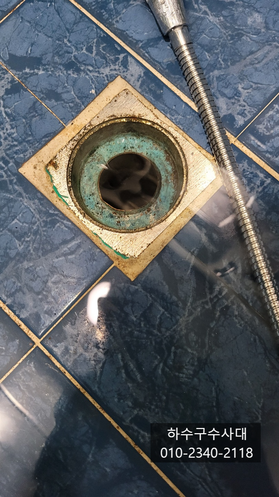
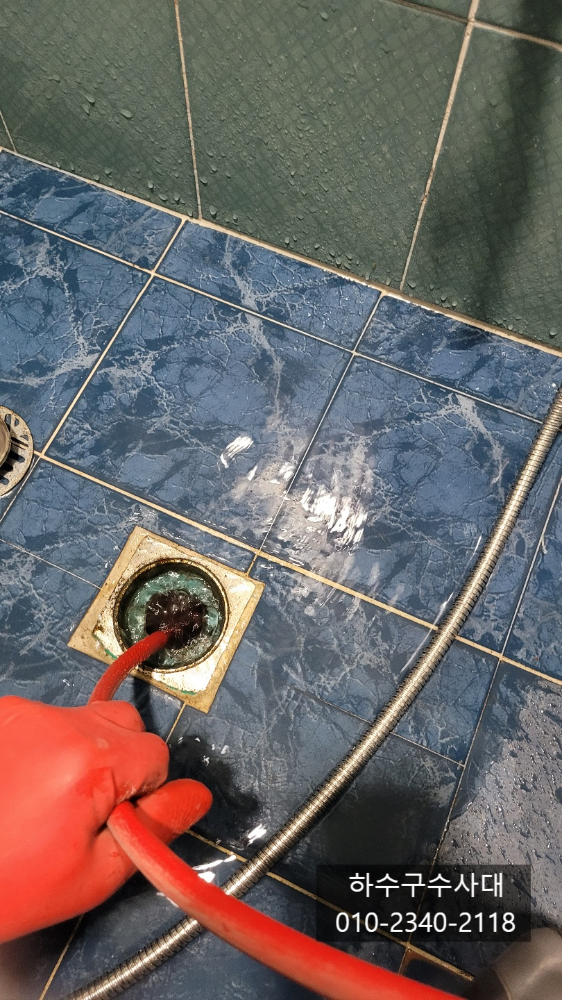
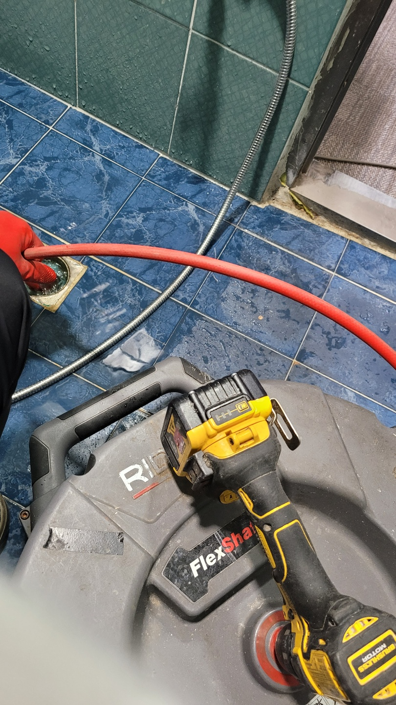
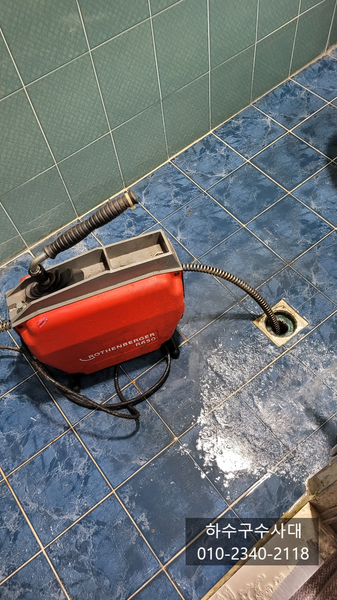
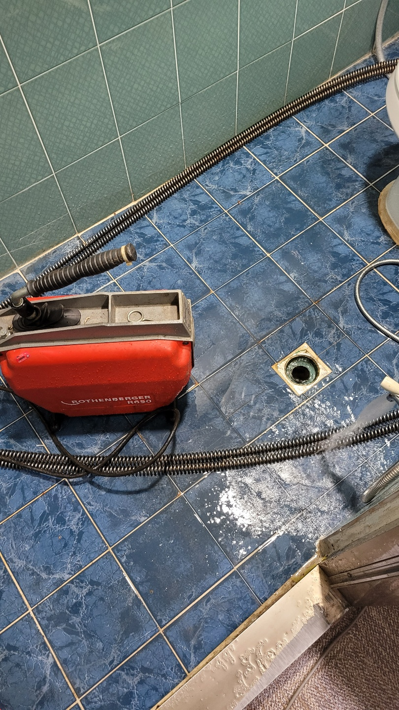
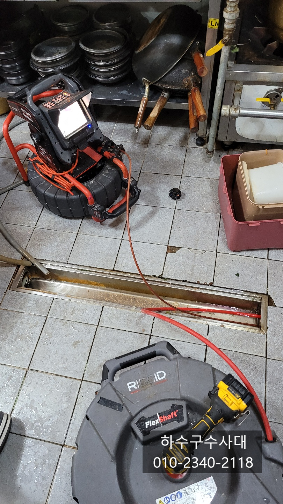
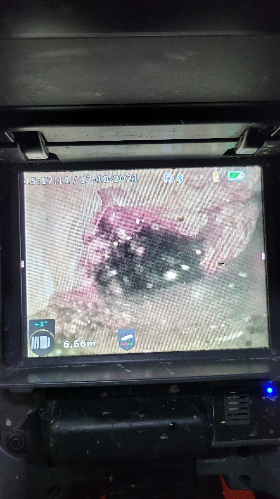

🏠 상록구 하수구막힘 일동 이동 월피동 부곡동 하수구막힘
서울 하수구막힘 전문 시공 후기

📋 작업 개요
- 위치: 서울
- 서비스 유형: 하수구막힘, 배관막힘, 집수정막힘, 역류해결, 뚫는업체, 배관청소, 설비공사
- 작업 일시: 2021. 10. 18. 23:19
- 업체명: 하수구수사대 (010-5615-2118)
🔍 문제 상황
상록구 하수구막힘 일동 이동 월피동 부곡동 하수구막힘
안녕하세요
"하수구수사대" 입니다.
오늘은 상록구에 위치한 상가주택을 다녀왔는데요
1층은 식당 2층3층은 주거공간으로
4세대가 사는 상가주택이였어요.
2층3층에서 물을 쓰면 1층 식당 화장실하수구에서
역류하는 증상 이였습니다.
도착했을때는 물이 내려가있었지만 샤워기로
물을 흘려보낸후 얼마있다가 물이 차오르는것을
확인하였습니다.
화장실에서 물이 많이 올라오면 창고로 넘쳐 흘러
물을 퍼내느라 애를 많이 쓰셨다는데요
3개월 전부터 스프링 작업으로 3번정도 뚫으셨답니다.
이번에는 확실하게 원인을 찾고 해결을 하고자
소개로 저희 하수구수사대를 선택해 주셨습니다.
우선 막힌 위치를 파악하게 위해 내시경카메라를 넣어봤지만
배관이 여러번 꺽여 내시경카메라 진입이 되지 않아
플렉스샤프트를 선택하여 넣었지만 마찬가지로
꺽이는 부분이 많아 진입이 되지 않았습니다.
여러번 꺽여있는 배관은 장비 진입도 힘들고
사고 위험부담도 있어 신중하게 장비를 선택하되
장비를 넣을때 또한 신중해야 합니다.

🔎 원인 분석
💡 전문가 진단: 하수구수사대010-2340-2118
들어가면서 배관이 넓어지고 꺽이는 구간이 많아 스프링으로
우선 통수를 시켜 주었습니다. 보시는것처럼 전동스프링장비는
전기의 힘으로 스프링을 밀어주기때문에 강력한 힘으로
꺽여있는 배관도 잘 들어가지만 잘못하면 스프링이 배관안에서
꼬이는 경우 땅을 깨야하는 공사를 할수도 있기에 항상 신중하게 넣어야해요^^
일단 막힌 부분을 뚫어 물은 넘치지 않지만
자주 막히는 원인을 찾고 해결해야합니다.
스프링으로 막혀있던 부분을 뚫어주니 집수정에서
물이 시원하게 나오는 걸보니 속이 시원하네요^^
집수정에 기름덩어리가 있는걸로 보아 배관에
기름덩어리가 가득 차있을것으로 예상이 되네요.
화장실에서는 장비 진입이 되지않아 내시경카메라로 주방에
넣어보니 화장실 물이 지나가는 것을 확인하였습니다.
연결부위가 T자 구조로 되어있어 내시경카메라를
보면서 화장실쪽으로 진입을 시켜보니 배관안에 기름덩어리가
가득차 있는것을 확인하였습니다!!
일부구간은 기름덩어리 틈으로 물이 나올정도로
심한 상태였어요. 이렇다보니 스프링으로 막힌부분만
구멍을 내다보니 많은양의 물을 쓰게되면
1층 화장실로 역류되었다가 천천히 내려가는 증상을
보였네요.
기름덩어리로 막힌경우 스프링은 일시적으로
뚫어줄뿐 완벽하게 해결할수 없고 뚫는다해도

🔧 작업 과정
언제 또 막힐지 몰라 불안할수 밖에 없는데요
자주 막히는 하수구라면 꼭 원인을 찾아 해결하는것이
비용이나 정신적으로 더 좋습니다.
원인을 찾았으니 해결을 해야겠죠?? ^^
기름덩어리들을 없애기 위해 플렉스샤프트204가 출동하였습니다^^
큰 배관에 주로 쓰이는 장비로 배관청소에 최적화 되어있어
많이 사용을 하고 있는 장비입니다.
하지만 기름덩어리가 너무 딱딱하면 이마저도 쉽지만은
않지만 내시경카메라를 보면서 반복적인
작업을 해주면 대부분 없어집니다.
내시경카메라를 보면서 기름덩어리를 제거하는 영상입니다.
체인에 강력하게 회전하면서 기름덩어리를
갈아내고 있습니다.
기름덩어리가 오랜기간 쌓여있던거라 굉장히
단단했는데요 배관이 길다보니 일부구간이
구배가 좋지않아 물이 고여있고 윗층에서 설거지를
하면서 버려진 기름들이 굳은 것입니다.
기름덩어리가 배관에서 떨어져 일부분은 물에 둥둥 떠서
하수구로 빠져 나오기도 합니다.
고객님께서도 내시경카메라를 보시면서 이렇게 많이
막혀 있을줄은 몰랐다고 하시면서 완벽하게 제거가 되서
속이다 시원하다고 하시네요^^
3달동안 화장실하수구에서 역류될때마다 스트레스가
이만저만 아니였고 손님이 있을때 역류되면 많이
당황하셨다면서 이제 그럴일 없어져 음료수도 3병이나 주셨어요^^
외부 집수정으로 기름덩어리들이 많이 떨어져 나왔는데
큰건 손바닥 만하것도 나왔어요.
기름덩어리라도 기름성분이라 물보다 가볍기때문에 물에
둥둥 뜬답니다.ㅋ
배관 깊숙한곳까지 내시경을 넣어 확인해 봤는데요
깨끗하게 기름덩어리가 제거가 되었지만
역시 구배가 좋지않아 배관에 물어 가득차있는것을
확인 할수있습니다.
** 놀라지 마세요 영상에서 쥐가나옵니다!!
깨끗히 뚫고나니 하수구에서도 맑은물이
시원하게 나옵니다.


✅ 작업 완료
영상을 찍으면서도 깜짝 놀랐는데요
쥐가 살고 있더라구요. 배관밑에 틈이있는데
틈으로도 나왔다 배관으로 나왔다 하는게
틈새에서 거주하는 모양입니다^^
이처럼 자주막히는 하수구는 원인을 찾아
근본적으로 해결하는 것을 추천드립니다.
저희 하수구수사대는 서울,경기,인천 전지역에서
활동하고 있으니 언제든지 연락주세요^^
하수구수사대
010-2340-2118




⚠️ 하수구 배관 막힘 예방 및 관리 가이드
- ✅ 머리카락, 비닐, 물티슈 등 물에 분해되지 않는 이물질은 하수구 유입을 절대 금지해 주세요.
- ✅ 하수구 거름망을 씌우고 모여진 이물질은 주기적으로 쓰레기통에 바로 비워주셔야 합니다.
- ✅ 배관 노후가 심할 경우 이물질이 더 쉽게 걸리므로 주기적인 배관 세척(고압세척 등)을 권장합니다.
- ✅ 작업 후 1년 이내 재발 시 하수구수사대에서 무상 A/S 보증 서비스를 제공합니다.
💡 핵심 정리
- 확실한 장비 작업(내시경 점검 및 샤프트 스케일링)으로 원인을 뿌리 뽑습니다.
- 작업 후 1년 이내에 동일한 부위 재발 시 100% 무상 A/S 서비스를 보장합니다.
- 서울 · 경기 · 인천 전 지역에 24시간 언제든 긴급 출동할 수 있도록 항시 대기 중입니다.
❓ 자주 묻는 질문 (FAQ)
🚨 서울 하수구막힘 문제로 고민이신가요?
정확한 원인 진단과 확실한 시공으로 재발 없는 해결을 약속드립니다.
24시간 긴급 출동 | 서울 · 경기 · 인천 전지역 | 1년 내 재발 시 무상 A/S